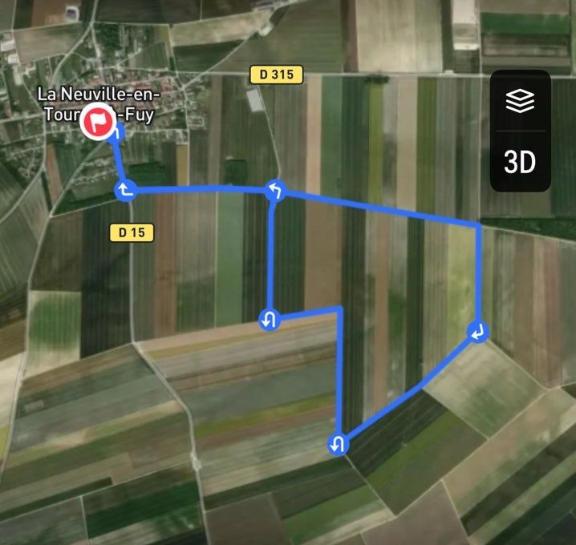
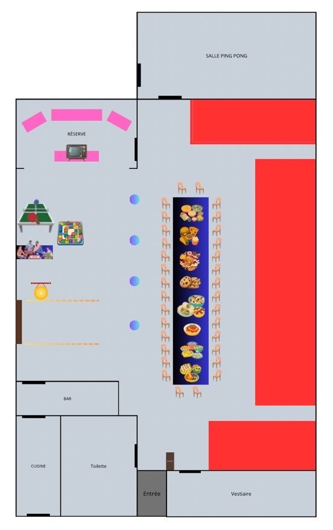

Tout ce qu'il faut savoir avant la cloche.
Quand arriver, où aller, comment se passe une boucle, ce qu'on mange. Les détails de dernière minute passent aussi par le groupe WhatsApp.
6,71 km.
Plat comme la main.
Départ du village, puis une grande boucle à travers les champs. 12 m de dénivelé : tout se joue sur la régularité, le froid et le vent. Rien pour s'abriter en pleine plaine.

Tracé de la boucleLe week-end,
heure par heure.
Les horaires d'arrivée et de départ sont fixes. Après, c'est la cloche qui décide.
Sortie par la porte marron.
Retour par la grande porte.
Le même circuit à chaque heure. Apprends-le pendant les tours de jour, il te servira toute la nuit.
Signal
Un signal à 2 min puis à 1 min du départ. Tu te places dans la zone de départ.
Cloche
À l'heure pile, la cloche sonne. Tout le monde sort par la porte marron, sur le côté de la salle.
La boucle
6,706 km balisés. Tu dois revenir avant la cloche suivante, à ton rythme.
Le sas
Retour par la porte principale. Dans le sas, tu enlèves tes chaussures.
Ton box
Le temps qui reste est à toi : manger, te changer, dormir. Jusqu'au prochain signal.
Tu es éliminé si tu ne finis pas ta boucle en moins de 60 min, ou si tu n'es pas dans la zone de départ au coup de cloche.
Quand il ne reste qu'un coureur, il doit encore boucler un tour complet, seul, dans l'heure. S'il n'y parvient pas, pas de vainqueur.
De 17h jusqu'au lever du jour : frontale allumée et gilet réfléchissant. Le parcours emprunte des chemins et rues ouverts aux riverains.
Comment s'organise
la salle.
Une grande salle des fêtes chauffée, découpée en zones. Chaque coureur a son espace à lui.

- Box coureursLes zones rouges, découpées à la rubalise.
- Table ravito & repasLa grande table au centre.
- Plateau liveCanapés et télé, en haut à gauche.
- Zone de départLa cloche et la porte marron, sur le côté gauche.
- Entrée & sasRetour de boucle par ici, chaussures retirées. Vestiaire juste à droite.
On s'occupe du chaud.
Toi, de tes gels.
Ravito chaud en continu
- Pâtes et soupe chaudes
- Crêpes (nutella & co)
- Coca, bonbons, eau
- À prévoir toi-même : électrolytes, gels, barres et tout ravito spécifique
Barquettes réservées à l'avance
- Déclarés par le coureur dans le formulaire d'inscription
- Le repas se choisit dans ce même formulaire
- Repas froids préparés à l'avance (salades en barquettes)
- 2 repas : un le midi, un le soir, à récupérer sur place
Les questions
qu'on nous pose.
Je peux arrêter quand je veux ?
Oui. Tu préviens l'orga, on te fait une petite interview pour le live, et tu récupères toutes tes affaires. Tu peux rester profiter de l'ambiance ou rentrer chez toi. Tu auras ta médaille comme tout le monde.
Où est-ce que je dors entre deux boucles ?
Dans ton box. Ramène de quoi t'allonger (lit de camp, matelas) et de quoi te couvrir. La liste complète est sur la page À ramener.
Pourquoi enlever ses chaussures dans le sas ?
Pour garder la salle propre : on revient de chemins boueux en plein hiver. Prévois une paire de claquettes ou de chaussons pour circuler à l'intérieur.
Mes proches peuvent suivre la course ?
Sur place, le live est projeté au mur de la salle. À distance, tout est diffusé en direct sur TikTok pendant tout le week-end.
Où trouver les infos de dernière minute ?
Sur le groupe WhatsApp officiel des participants : matériel, ravitaillement, organisation de la salle, météo.